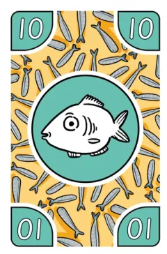

Pizza Love® card game
Three games with one deck. Start with Pizza Party – it’s the quickest to learn.
- 2–5 players
- 6+
- 42 pizza cards
- 58 topping cards
- 5–15 min
How to make a pizza

Pizza cards
A pizza card shows a pizza with one to four different toppings. The pizza’s value (1–10) is shown in the corners. The game includes 10 heart pizzas with the value 10.

Topping cards
A topping card shows one topping. The topping’s value (1–10) is shown in the corners. The 3 fantasy toppings (X) can be any topping.
Basic rule
Pizza cards are always on the table. They are made with topping cards from your hand.
Pizza value
Make a pizza with your own topping cards and say aloud the calculation that matches the pizza’s value. All calculations are allowed and can be combined, as long as the result equals the pizza’s value. For example 5 = 10 : 2.
Example: tomato–pineapple pizza
 =
=

:
The pizza’s value is 5. You can make it with any topping cards, as long as the calculation gives 5: for example 4 + 1, 6 – 1, 2 + 3 or 10 : 2.
All calculations count
Besides addition, subtraction, multiplication and division, you can also use powers, logarithms or factorials, for example 5 = 2² + 1 or 5 = 3! – 1. Everyone calculates at their own level.
Three ways to make a pizza
The ways differ in which topping cards you may use. All the examples use the same pizza: tomato–pineapple, value 5.
1. Any toppings
#1 Pizza Party
Use any topping cards, as many as you like – even just one. Only the value counts.
5 = 5 · 5 = 4 + 1 · 5 = 7 + 6 - 8
2. Basso the monkey’s way
#1 Pizza Party (extra challenge) · #2 Pizza Basso
Use as many different toppings as the pizza has. They don’t have to be the pizza’s own toppings. You may use more cards, for example two of the same.
Try it in #1 Pizza Party too: the game gets more fun, if a little harder.
The tomato–pineapple pizza has two toppings, so one card is not enough.
5 = 10 : 2 · 5 = 2 + 2 + 1
3. The right toppings
#3 Pizza Love
Make the pizza with exactly its own toppings.
The tomato–pineapple pizza needs a tomato and a pineapple.
5 = 2 + 3

Bruno or Basso? The monkey in the game is now called Basso. In older rules and videos his name is Bruno, and the second game mode is called Pizza Bruno. The rules are the same.
Three ways to play
Open a game mode to see its rules and videos.
#1Pizza PartyEasiest to start with, quick and lively · approx. 5 min
1. Any toppings2. Basso the monkey’s way
Videos
Goal
Players compete to make pizzas. The winner is the one who makes the most pizzas before the pizza or topping cards run out.
Game preparations
- Shuffle the pizza cards and place them in a pile within reach of all players.
- Shuffle the topping cards and deal 5 to each player. The rest form a draw pile. Players may look at their cards.
Starting the game
Turn the first pizza card face up next to the pile. All players immediately try to make that pizza with their topping cards.
How to play
- The game is played without turns: everyone tries to make pizzas at the same time.
- You make a pizza by slapping your topping cards onto the pizza on the table and saying the calculation aloud. The fastest player takes the pizza card and collects it in front of them.
- If several players slap at the same time, the pizza goes to the player whose cards are at the bottom.
- Used topping cards are removed from the game. Draw new cards until you have 5 in hand again.
- Turn a new pizza card face up straight away. Continue until the pizza or topping cards run out and no one can make a pizza anymore.
If a pizza cannot be made
If no one can or wants to make the pizza on the table, turn a new pizza card on top of it. The player who makes the next pizza takes all the pizzas on the table.
Scoring and winning
A pizza scores as many points as it has toppings. A heart pizza scores one extra point. For example, the tomato–pineapple pizza = 2 points.
The round is won by the player with the most points. Agree on how many rounds to play – for example, the first to win 3 or 5 rounds wins the whole game.
Turn-based Pizza Party
You can also play in turns, giving each player time to think during their turn.
Optional rules
You can agree on rules that restrict the calculations, for example:
- play only with addition and subtraction
- every pizza must include multiplication or division.
#2Pizza BassoCalm and exciting · approx. 7 min
Videos
Goal
Players try to empty their hand – to get rid of all the topping cards in their hand. The first to succeed wins the round.
Note: Pizzas are made in Basso the monkey’s way.
Game preparations
- Shuffle the pizza cards and place them in a pile within reach of all players.
- Shuffle the topping cards and deal 7 to each player. The rest form the draw pile. Players may look at their cards.
Starting the game
Turn the first pizza card face up next to the pile. The player who last ate pizza begins.
How to play
Players take turns trying to make the pizza on the table with their topping cards.
A) If you succeed: remove the used topping cards from the game and turn a new pizza card from the pile on top of the old one. The turn passes to the next player.
B) If you can’t or don’t want to make the pizza: draw one topping card. The turn passes to the next player.
C) One card left: when you have only one topping card left, act like a hungry Basso the monkey and shout: “PIZZAAA!”
If the topping cards run out
Shuffle the discarded topping cards into a new draw pile and continue.
Scoring and winning
The round is won by the first player to get rid of all their topping cards. Add up the values of the cards left in the other players’ hands – that total is the winner’s points. Normal toppings count their value (1–10), a fantasy topping counts 20.
The first to reach 100 points wins and earns the title Pizza Basso – the true pizza monkey.
Shorter game
You can agree that the game ends at, for example, 30 or 50 points, or that the first to win 3 or 5 rounds wins the whole game.
#3Pizza LoveMost tactical and challenging, 8+ · approx. 15 min
Goal
Players try to make all their own pizzas before the others. The first to succeed wins.
Note: Now the toppings matter: a pizza can only be made with the right toppings.
Game preparations
- Shuffle and deal 8 pizza cards to each player. Players place them face down in a pile in front of them and turn the top card face up.
- Place one pizza card face up in the middle of the table as the exchange pizza. Remove the rest of the pizza cards from the game.
- Shuffle the topping cards and place them as a draw pile on the table.
Storage
Each player has 4 storage slots. Topping cards in storage are kept face up. You can use them for your own pizzas just like cards in your hand, and other players can use them for exchanges.
Starting the game
The player who last ate pizza begins and draws 5 topping cards into their hand.
How to play
- Draw topping cards until you have 5 cards in hand.
- Try to make the top pizza of your pile using cards from your hand and storage.
- You may exchange cards in your storage with another player’s storage cards using calculations.
- Once per turn, you may swap the top pizza of your pile and the exchange pizza: your own pizza stays in the middle as the new exchange pizza, and the exchange pizza goes on top of your pile. You may make the pizza you got immediately.
- End your turn by placing one topping card from your hand face up into your storage.
Note: If you empty your hand before placing a storage card, draw 5 new cards and continue your turn.
Making a pizza
When you have the toppings you need in your hand and/or storage, make the pizza. The pizza card and the used topping cards are removed from the game. Turn the next pizza card from your pile face up – if you have the toppings for it, you may make it immediately.
Heart pizza
When you make a heart pizza, give your next pizza card (without looking at it) to another player. They place it at the bottom of their pile.
Exchanging storage cards
Get the toppings you need by exchanging cards in your storage with another player’s storage cards.
- The cards you give and the cards you get must make the same number when you calculate. All calculations are allowed.
- The other player must accept the exchange.
- Place the cards you get in your own storage.
- You may make several exchanges per turn. Each exchange is always with one other player.
- Only top cards can be exchanged.
Filling the storage
- Storage slots can be filled in any order.
- Cards can be stacked. Only the top card can be used or exchanged, so by stacking you can protect a card from exchanges. It is then locked for you too.
- Storage cards cannot be moved.
Winning the game
The game ends when one player has made all the pizzas in their pile.

Printable rules
All three game modes in English – one double-sided sheet that fits in the game box when folded.

Next: the Pizza Love® board game
The same pizza world on a game board: make the pizza boxes’ favourite pizzas and be the first to collect 10 different slices. Three ways to play, including a cooperative game.